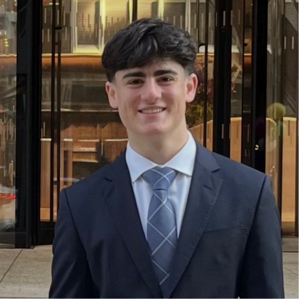

Association for Corporate Growth · Investment Banking Association
The pipeline from UTSA to UT Austin to a banking seat.
ACG IBA is a coached preparation program, not a résumé line. We recruit UTSA freshmen who intend to transfer to UT Austin, and every coach has already made that exact move. Members work through technical and behavioral mocks, get scored after every session, and track exactly where they stand against the recruiting calendar.
What this is
Built for the path most clubs ignore.
Banking recruiting assumes you started at a target school with an alumni network already in place. A lot of us didn't.
ACG IBA exists for students taking the longer route: starting at UTSA, transferring into UT Austin, and competing for the same analyst seats as people who had a two-year head start. That route is winnable, but only with a structure that forces reps and tells you the truth about where you stand.
Which is why we recruit freshmen. By the time someone is a junior the recruiting calendar has largely closed around them; a freshman still has room to fix accounting, build the transfer GPA and network before applications open.
So the program is deliberately narrow. Members get repeated mock interviews. Coaches score every mock across technical, behavioral and markets competencies. Scores update after each session with the newest mock weighted most heavily, so your profile reflects where you are now, not where you were in September.
Everything a member needs to run their own process, including the rating profile, the recruiting timeline and the coursework map, lives behind the member portal.
What's included
More than mock interviews.
Membership covers the whole route: getting into UT, getting technically ready, and getting the offer.
Getting into UT
Freshman year at UTSATransfer strategy
What the McCombs transfer actually turns on, and how to build the case for it from your first semester rather than scrambling in the spring.
Coursework planning
Which classes to take and in what order, mapped to both the transfer prerequisites and the competencies you will be scored on later.
A timeline you can see
Both calendars in one place: the academic path through transfer, and the recruiting cycle that runs on its own schedule regardless.
Getting technically ready
Every semesterTechnical training
Structured instruction across accounting, valuation, DCF, LBO and M&A, covering the same competencies the rating model scores, so training and feedback point the same direction.
Mock interviews
Technical screens, behavioral rounds and full mocks, run repeatedly rather than once before a deadline. The reps are the program.
A scored profile
A coach rates every competency a mock covered. Your profile weights recent sessions most heavily, so it shows where you stand now and what to drill next.
Getting the offer
When recruiting opensRésumé
Converted to standard banking format and reviewed line by line. Bullets rewritten to lead with action and quantify outcomes, because a one-page screen is all most applications get.
Profile built to be found by recruiters and to survive a banker clicking through it: headline, about section, experience framing, and what to post versus what to leave off.
Opportunities and introductions
A running board of internships, insight days and early-ID programs, plus alumni and industry contacts who have agreed to speak with members.
Leadership
Who runs it.
President & Coach
Andrew Vu
Current UT Austin student. Transferred from UTSA.
Founded the program on the premise that the UTSA-to-McCombs route is a solvable problem rather than a disadvantage, and runs it on that basis. Sets the standard members are scored against and rates mocks across technical, behavioral and markets.
LinkedIn →
Co-President & Coach
Ben Lavie
McCombs BBA Finance '29. Transferred to UT Austin from UTSA.
Made the UTSA-to-McCombs transfer himself and built the program around what he wished had existed at the start of it. Rates mocks across technical, behavioral and markets.
LinkedIn →Applications are reviewed on a rolling basis.
Read the requirements, then submit. No prior finance experience required. Preparation is the point.
See requirements & apply →